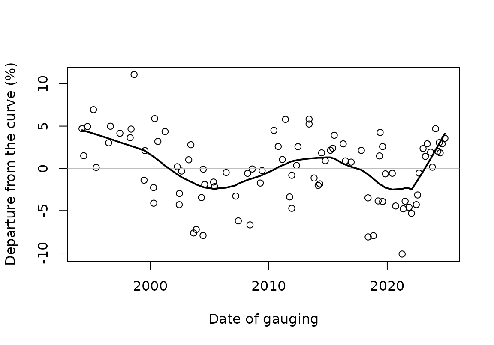
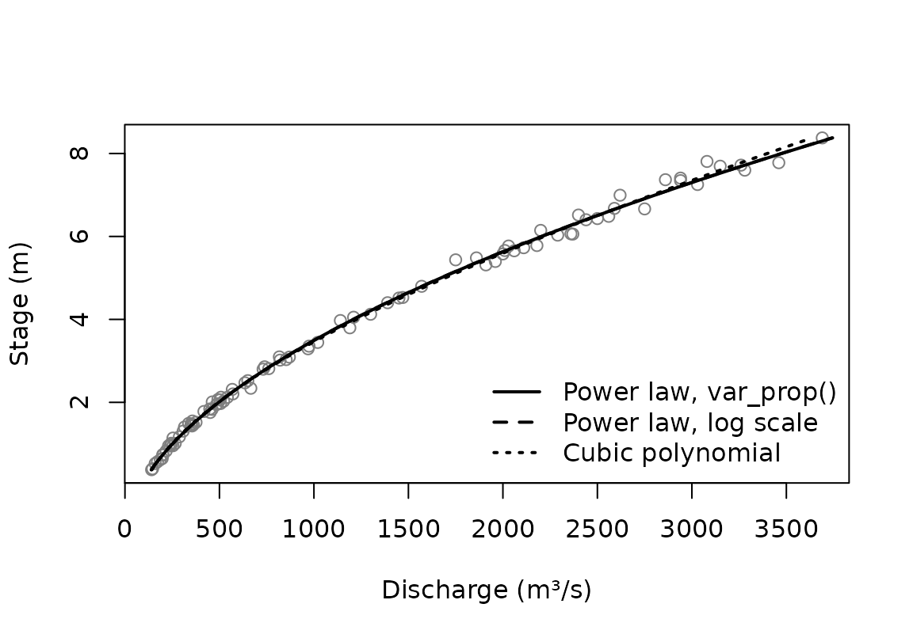
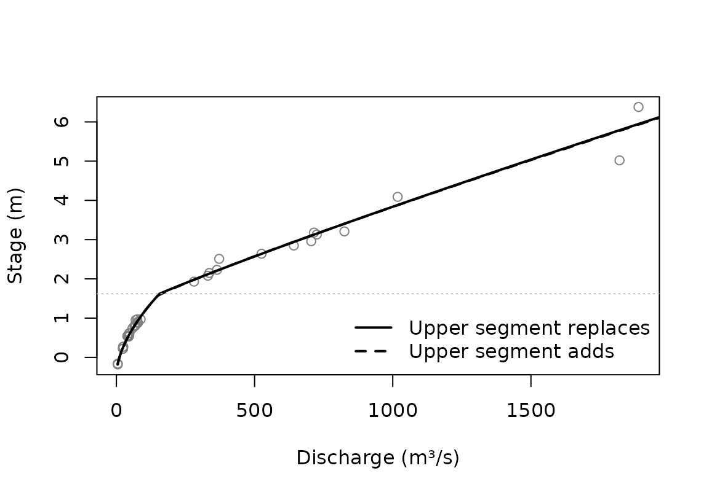

This vignette walks through the ways CSHShydRometry fits a rating
curve: the relationship between a river’s stage (its water level) and
its discharge (the flow). It starts by looking at the data, which tells
you which model to use, then fits single-segment curves in several ways,
and ends with a curve in two segments. How sure we can be about the
fitted curves is the subject of
vignette("uncertainty").
The gaugings
A rating curve is fitted to gaugings: occasions when both stage and discharge were measured. The package comes with 93 gaugings from the Thompson River near Spences Bridge, British Columbia, made between 1994 and 2024.
thompson
#> # A tibble: 93 × 5
#> date stage discharge uncertainty_pct rating_table
#> <date> <dbl> <dbl> <dbl> <chr>
#> 1 1994-03-29 1.01 266 NA NA
#> 2 1994-05-20 5.58 2000 NA NA
#> 3 1994-09-15 1.76 451 NA NA
#> 4 1995-03-17 0.645 197 NA NA
#> 5 1995-06-09 6.40 2440 NA NA
#> 6 1996-06-27 6.03 2290 NA NA
#> 7 1996-08-22 3.29 969 NA NA
#> 8 1997-06-09 7.78 3460 NA NA
#> 9 1998-04-21 1.97 506 NA NA
#> 10 1998-05-19 5.78 2180 NA NA
#> # ℹ 83 more rowsRating curves are drawn with stage on the vertical axis:
plot(stage ~ discharge, data = thompson,
xlab = "Discharge (m³/s)", ylab = "Stage (m)")Which gaugings to use
A rating curve describes the river while its channel stays the same. Channels change, through erosion, deposition or work on the control, so a curve is usually fitted to gaugings from one period of stable conditions.
One way to check is to fit a model to the entire dataset and see
whether the gaugings systematically miss the curve over time. We’ll
build that model here with rc_powerlaw_log(), which is
explained below. What matters here are its residuals, which are on the
log scale, so multiplied by 100 they are roughly percentage departures
from the curve.
fit_all <- rc_powerlaw_log(discharge, stage, data = thompson)
departure <- residuals(fit_all)
plot(thompson$date, 100 * departure,
xlab = "Date of gauging", ylab = "Departure from the curve (%)")
abline(h = 0, col = "grey")
lines(lowess(thompson$date, 100 * departure, f = 0.3), lwd = 2)
The curve’s error depends on when the gaugings were made: its
predictions are too low in the 1990s, too high in the 2000s, and so on.
The Water Survey’s own rating changed too, as the
rating_table column records.
For a rating to use in practice, you would choose a stable period and
keep only its gaugings, for example with
subset(thompson, rating_table == "11"). This vignette uses
all 93 gaugings to illustrate the methods, which is fine for that
purpose, but the fitted curves average over several ratings.
Looking at the scatter
Before choosing a model, look at how the gaugings scatter about a fitted curve. A loess smoother makes few assumptions about the curve’s shape, so its residuals show the scatter fairly.
Fit the model and get the fitted values and the residuals.
smooth <- rc_loess(discharge, stage, data = thompson)
fitted_q <- fitted(smooth)
residual_q <- residuals(smooth)Now check whether the residuals have an even spread about the curve.
Show the code
op <- par(mfrow = c(1, 2))
plot(
fitted_q,
residual_q,
xlab = "Fitted discharge (m³/s)",
ylab = "Residual (m³/s)",
main = "Residuals"
)
abline(h = 0, col = "grey")
plot(
fitted_q,
100 * residual_q / fitted_q,
xlab = "Fitted discharge (m³/s)",
ylab = "Residual (%)",
main = "Relative residuals"
)
abline(h = 0, col = "grey")
par(op)The residuals fan out as the flow grows, while the relative residuals stay roughly even. The scatter is roughly proportional to the flow: a constant percentage, not a constant amount. That matters for the fit, because ordinary least squares doesn’t perform as well when the residuals scatter more with increasing flow.
There are two ways to allow for it, both below: model the variance, or fit on the log scale.
A power law on the original scale
The usual rating curve is a power law,
,
where
is discharge and
is stage. The model parameters are
,
,
and
,
with
being the offset: the stage at which the flow would stop.
rc_powerlaw() fits this model by least squares on the
original scale:
fit <- rc_powerlaw(discharge, stage, data = thompson)
coef(fit)
#> a b c
#> 80.6686509 1.7131161 -0.9044142To improve the least squares estimation, the variance
argument lets you specify how you think the scatter changes with the
flow. By default it is the same at every flow (var_none()).
With var_prop() its standard deviation is assumed
proportional to the flow, which suits the Thompson gaugings better.
Either way, the fit weights each gauging by the reciprocal of its
variance.
fit_prop <- rc_powerlaw(
discharge,
stage,
data = thompson,
variance = var_prop()
)
coef(fit_prop)
#> a b c
#> 52.487716 1.879973 -1.303340It’s worth knowing about the extra gymnastics this takes. When we say that the standard deviation of the flow is proportional to the flow itself, we don’t mean the observed flow, but the average flow at a given stage: the thing being predicted. That’s because we’re talking about the (vertical) scatter around the curve. So the weights depend on the fitted curve, and the fitted curve depends on the weights. To deal with this, the fit is repeated, reweighting each time, until it settles; hence “iteratively reweighted least squares” (IRLS). Here is the number of iterations it took:
fit_prop$irls$iterations
#> [1] 5var_power() goes one step further than
var_prop(), and estimates the power of the flow to which
the scatter is proportional:
fit_power <- rc_powerlaw(
discharge,
stage,
data = thompson,
variance = var_power()
)
fit_power$variance$exponent
#> [1] 0.999845An estimated power close to 1 supports var_prop(). The
estimate can be unstable with few gaugings, so compare it with the fit
under var_prop().
When each gauging comes with its own reported uncertainty,
var_spec() uses it directly; there is an example with the
two-segment curve below. See ?variance for all the variance
schemes.
A power law on the log scale
Taking logs turns the power law into a straight line in :
Equal scatter on the log scale is scatter proportional to the flow,
so rc_powerlaw_log() allows for the fanning out by its
choice of scale, with no variance scheme:
fit_log <- rc_powerlaw_log(discharge, stage, data = thompson)
coef(fit_log)
#> a b c
#> 52.398628 1.880339 -1.304109Back on the original scale, this curve estimates the geometric mean
discharge at each stage, which is a little below the arithmetic mean.
fit_log$a_corrected holds two versions of
corrected for that.
is the offset. For a single power law it is the stage at which
the flow would stop, but with several segments it no longer is, so the
package calls it the offset throughout. If it is known, say from a
survey of the control, give it as offset and only
and
are estimated. rc_powerlaw() takes offset
too.
coef(rc_powerlaw_log(discharge, stage, data = thompson, offset = -1.3))
#> a b c
#> 52.655954 1.878378 -1.300000Other curve shapes
Not every rating follows a power law. rc_poly() fits a
polynomial in stage, and rc_loess() a smooth curve with no
set shape. Both accept the same variance schemes as
rc_powerlaw(), except var_power().
Comparing the fits
Every fit has a predict() method, so the curves can be
compared at chosen stages:
at <- c(1, 4, 8)
predict(fit_prop, new_stage = at)
#> # A tibble: 3 × 2
#> stage fit
#> <dbl> <dbl>
#> 1 1 252.
#> 2 4 1208.
#> 3 8 3476.
predict(fit_cubic, new_stage = at)
#> # A tibble: 3 × 2
#> stage fit
#> <dbl> <dbl>
#> 1 1 249.
#> 2 4 1226.
#> 3 8 3399.predict() returns the same columns for every model, so
the results stack. With the dplyr package (not a dependency of this
one), bind_rows() can label each row with its model:
dplyr::bind_rows(
power_prop = predict(fit_prop, new_stage = at),
cubic = predict(fit_cubic, new_stage = at),
.id = "model"
)
#> # A tibble: 6 × 3
#> model stage fit
#> <chr> <dbl> <dbl>
#> 1 power_prop 1 252.
#> 2 power_prop 4 1208.
#> 3 power_prop 8 3476.
#> 4 cubic 1 249.
#> 5 cubic 4 1226.
#> 6 cubic 8 3399.Without new_stage, predict() covers the
range of the gaugings, which makes it easy to draw the curves:
plot(stage ~ discharge, data = thompson, col = "grey50",
xlab = "Discharge (m³/s)", ylab = "Stage (m)")
lines(stage ~ fit, data = predict(fit_prop), lwd = 2)
lines(stage ~ fit, data = predict(fit_log), lwd = 2, lty = 2)
lines(stage ~ fit, data = predict(fit_cubic), lwd = 2, lty = 3)
legend("bottomright", c("Power law, var_prop()", "Power law, log scale",
"Cubic polynomial"), lty = 1:3, lwd = 2, bty = "n")
Within the range of the gaugings the curves barely differ. They part
company beyond it; vignette("uncertainty") takes that
up.
A curve in two segments
Where the control changes, for example when the water rises out of
the channel onto a floodplain, one power law is not enough.
rc_2seg_powerlaw() fits two power laws that meet at a
breakpoint stage,
.
The Ardèche at Sauze, from the RBaM package, has such a change. RBaM
calls its columns H, Q and uQ;
here they get the names used in this package. Each gauging comes with
its standard uncertainty, in cubic meters per second.
sauze <- tibble::tibble(
stage = RBaM::SauzeGaugings$H,
discharge = RBaM::SauzeGaugings$Q,
uncertainty_sd = RBaM::SauzeGaugings$uQ
)
plot(
stage ~ discharge,
data = sauze,
xlab = "Discharge (m³/s)",
ylab = "Stage (m)"
)The reported uncertainties give the variances directly, through
var_spec(). Below the breakpoint,
,
the curve is a single power law,
.
How the two segments combine above it,
,
is set by combine. With "replace" (the
default), the upper power law takes over from the lower one:
so that the two meet at the breakpoint. With "add", the
upper power law adds to the discharge the lower one carries at the
breakpoint, as when flow spills onto a floodplain:
fit_repl <- rc_2seg_powerlaw(
discharge, stage,
data = sauze,
variance = var_spec(sauze$uncertainty_sd^2)
)
fit_add <- rc_2seg_powerlaw(
discharge, stage,
data = sauze,
combine = "add",
variance = var_spec(sauze$uncertainty_sd^2)
)
c(
replace = fit_repl$curve_parameters$k,
add = fit_add$curve_parameters$k
)
#> replace add
#> 1.621688 1.564349The fit is sensitive to where the search for the breakpoint starts, so by default it tries several starting values and keeps the best. What each start led to is recorded:
fit_repl$kstart_search
#> # A tibble: 10 × 3
#> kstart k loss
#> <dbl> <dbl> <dbl>
#> 1 0.573 0.713 139.
#> 2 0.924 NA NA
#> 3 1.28 1.62 127.
#> 4 1.63 NA NA
#> 5 1.98 NA NA
#> 6 2.33 NA NA
#> 7 2.68 1.62 127.
#> 8 3.03 1.62 127.
#> 9 3.39 1.62 127.
#> 10 3.74 1.62 127.
plot(stage ~ discharge, data = sauze, col = "grey50",
xlab = "Discharge (m³/s)", ylab = "Stage (m)")
lines(stage ~ fit, data = predict(fit_repl), lwd = 2)
lines(stage ~ fit, data = predict(fit_add), lwd = 2, lty = 2)
abline(h = fit_repl$curve_parameters$k, col = "grey", lty = 3)
legend("bottomright", c("Upper segment replaces", "Upper segment adds"),
lty = 1:2, lwd = 2, bty = "n")
Gaugings are sparse near the breakpoint at Sauze, so where exactly it
lies is uncertain, which affects the limits on the curve there; see
vignette("uncertainty").